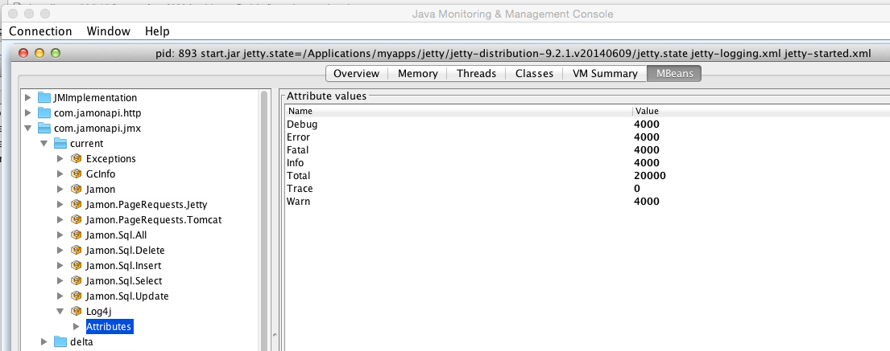
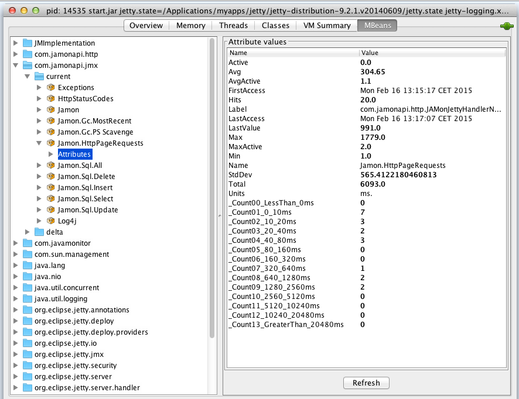
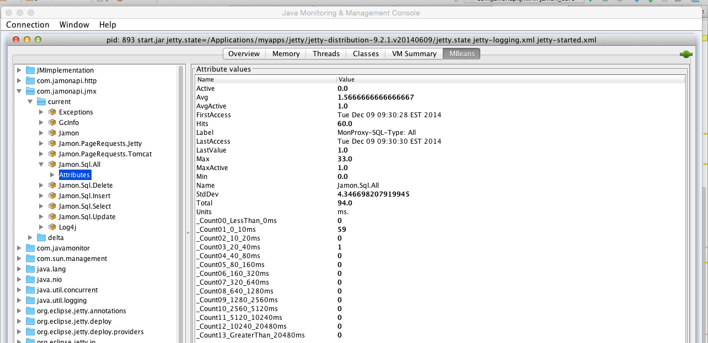
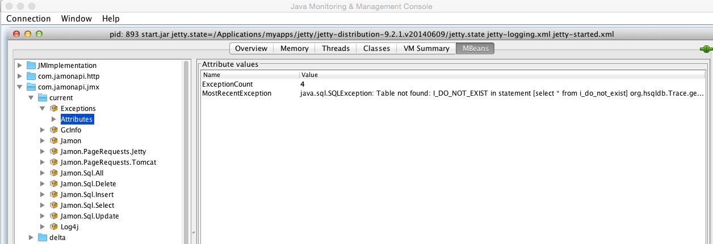
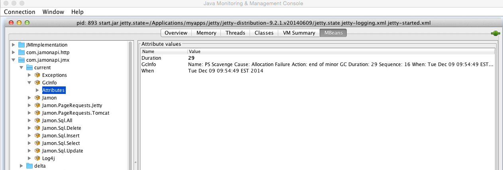
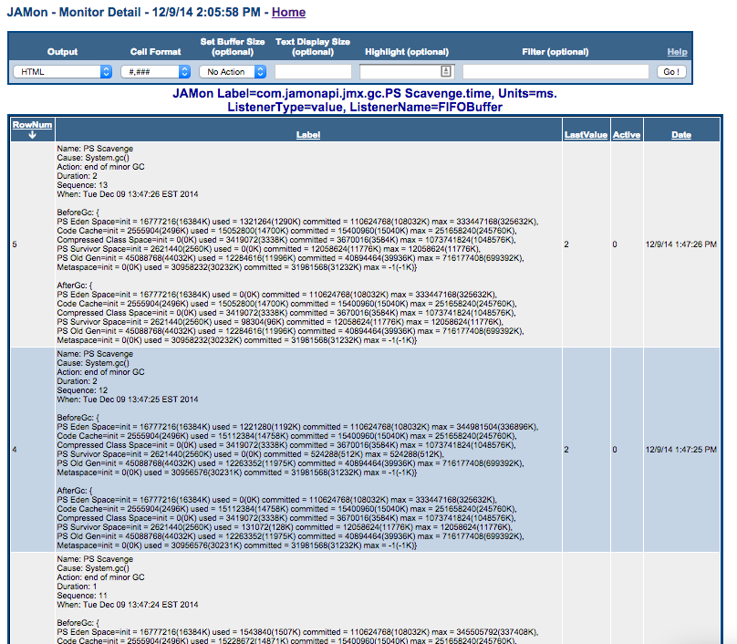
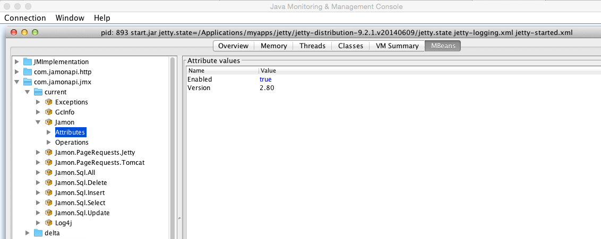
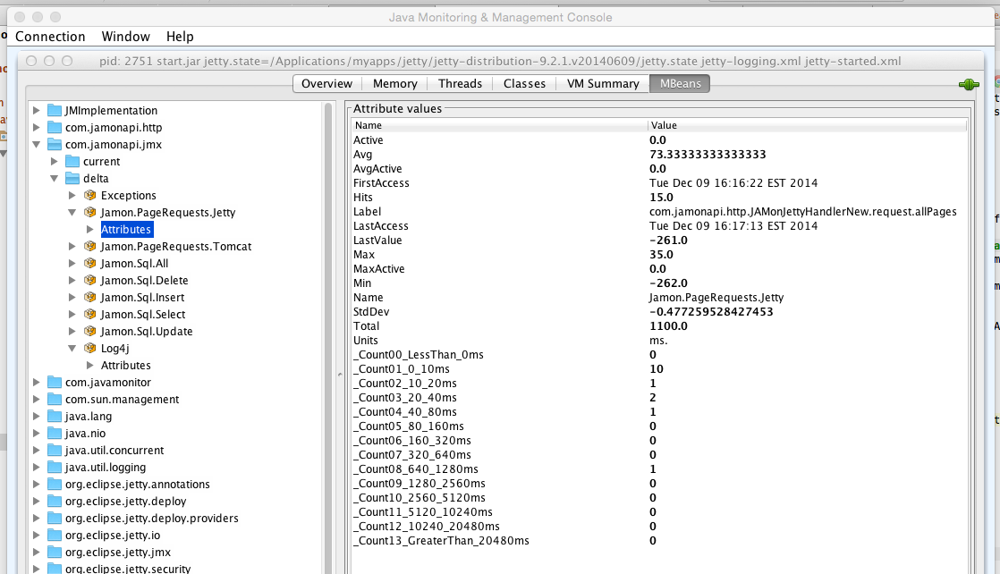

JAMon and JMX
The Java Management Extensions (JMX) technology is a standard part of the Java Platform. With JMX developers can expose and manage their application
via any JMX enabled console (Examples of these consoles are jconsole and visualvm). As of release 2.80 JAMon exposes the following through JMX:
As of release 2.80 JAMon exposes the following through JMX (note all data is also viewable via the JAMon war):
- Log4j - Counts for calls at the various log levels: TRACE, DEBUG, WARNING, INFO, ERROR, FATAL,...
- Page Requests - Metrics for page hits in a web application. Metrics include count, average time, total time, max time, min time and more.
- SQL Executions - Metrics for SQL statements including select, insert, delete, update and more. Metrics include count, average time, total time, max time, min time and more.
- Exceptions - A count of exceptions thrown by the application. You can also view the most recent stack trace.
- Garbage Collection info - For Oracle JVM's metrics for the garbage collector are automatically stored in JAMon. This allows developers to look at details of the
garbage collector without grepping a log. It also tracks the following garbage collector metrics: how often it fires, how long it takes, how much memory it frees and more.
- JAMon Custom Metrics - Developers can easily expose any JAMon monitor to JMX by simply adding the monitor label, and units to the jamonapi.properties file.
- Managing JAMon - The following functions can be performed via a JMX enabled gui such as jconsole: Enable/Disable, reset JAMon monitors
- Deltas - Display how much the JAMon monitors have changed (delta) since the last time the monitor was viewed.
The following image shows the above mentioned JAMon JMX capabilities.

The above image is an example of the JAMon JMX Log4j data. It shows that each of the log levels were called 4000 times except TRACE, which wasn't called at all.
The JAMon log4j appender must be enabled for this data to appear.
This section represents any page hits (jsp, servlet, html, etc) in a web application.
- To enable this capability JAMon http monitoring
must be enabled.
- If the web container is Jetty then the the JMX labeled 'Jamon.PageRequests.Jetty' will have metrics in it, and if Tomcat is the container then 'Jamon.PageRequests.Tomcat'
will be the label. Note: If you are using a different web container you can still track page request metrics by using JAMon Custom Metrics.
- As you can see below the following are tracked for the page requests: hits, average execution time, max execution time and all the other standard JAMon metrics. '_Count08_640_1280ms'
contains the count of page hits that took between 640 and 1280 ms. The same principal applies to the other similarly named fields.

This section represents any SQL commands executed by the application.
- To enable this capability SQL monitoring
must be enabled.
- There will be a JMX entry for each of the following SQL commands: select, insert, update, delete. There is also one for 'All' which aggregates all SQL commands.
- As you can see below the following are tracked: hits, average execution time, max execution time and all the other standard JAMon metrics. '_Count08_640_1280ms'
contains the number of SQL commands that took between 640 and 1280 ms. The same principal applies to the other similarly named fields.

This section represents any Exceptions thrown by the application.
- To enable this capability one of the JAMon capbilities that tracks exceptions must be enabled. This includes SQL, HTTP Page Request, interface monitoring, or Sring AOP monitoring.
- As you can see below the count of exceptions as well as the most recent stack trace are tracked.

This section represents information associated with garbage collection invocations.
- This capability only works for the Oracle JVM
- As you can below the following metrics are tracked for the most recent GC firing: duration in ms., when the invocation occured, metadata associated with he GC firing.

By viewing JAMon data via the JAMon war you will be able to see even more information associated with the garbage collector.
- For example
the following image shows the JAMon monitors that track performance of each of the types of garbage collector that fired.
- In this case minor and major collections occured. Depending on how you configured your garbage collector different data
may appear for you. These monitors indicate the duration in ms. of the GC invocations.
- You can see that a MarkSweep collector was invoked 6 times and the Scavenge collector was invoked 8 times.

In addition to the aggregates mentioned above, JAMon also tracks the details of each individual GC invocation via
JAMon's buffer listener capabilities. Listeners can be configured in the
jamonapi.properties file.
To configure and view the detailed GC invocation data click on the blue box underneath the 'Modify' column (see above).
Each row in the table below represents details collected for one GC invocation. Some of the data collected is: The duration of the GC invocation (in ms.), memory statistics both
before and after the GC invocation (BeforeGc, and AfterGc respectively).

In addition to tracking the frequency and duration of the GC invocations JAMon JMX also tracks the memory consumed (in bytes) by Java different memory pools after the GC was firing (AfterGc). Note all
GC related data shows up in the JAMon display screen if you filter by 'gc'. A snapshot of this data is in the image below. Note you can also attach a JAMon Buffer listener to all the
GC data in the report below.

Developers can use JAMon's custom JMX metrics capabilities to add any JAMon monitor to JMX. In fact that is exactly how any of the JMX entries that start with 'Jamon.' were added.
For example 'Jamon.PageRequests.Jetty' was added this way. To add your own custom JMX monitors simply add them to the
jamonapi.properties file. Below you can
see how many of the custom metrics discussed in this document are configured. Note each custom metric has to have the exact JAMon monitor label and units (comma delimited).
Optionally if you
would like it to appear with a different (more readable) name in JMX then you can provide a name. By convention the name should start with 'Jamon.'.
Note if you provide one custom JAMon JMX monitor and you want then you are taking ownership of ALL custom monitors. This means that if yo would like any of the other 'Jamon.' custom
JMX metrics to still appear they must also be in the jamonapi.properties file.

The 'Jamon' JMX bean allows developers to enable/disable JAMon, view the JAMon version and reset JAMon data via the 'reset' Operation.

